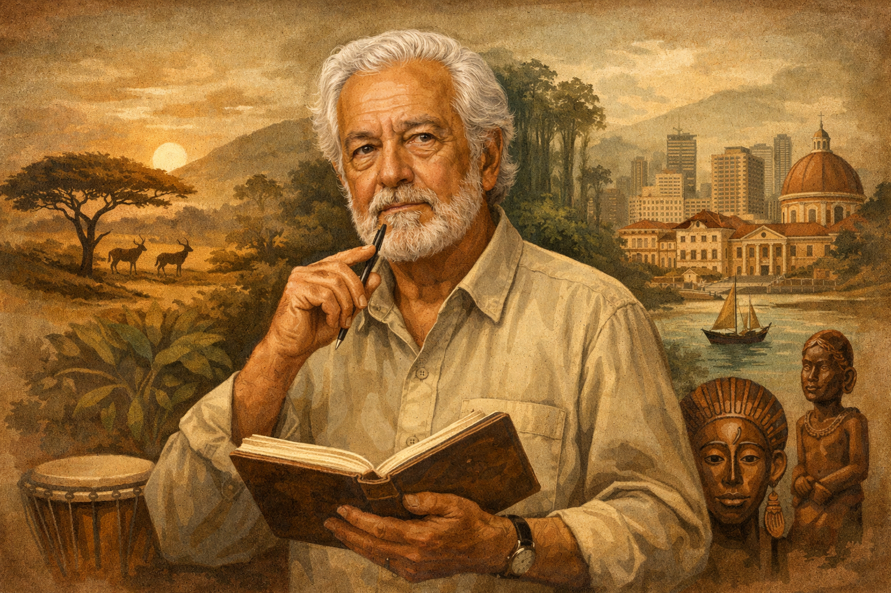

Artur Carlos Maurício Pestana dos Santos (Pepetela): Vida, Obra e Legado da Literatura Angolana
Artur Carlos Maurício Pestana dos Santos, conhecido pelo pseudônimo Pepetela, é um dos mais importantes escritores da literatura angolana e africana de língua portuguesa. Sua produção literária está profundamente ligada à história de Angola, especialmente aos processos de colonização, luta pela independência e aos desafios enfrentados no período pós-independência.
Biografia de Pepetela
Primeiros anos de vida
Artur Carlos Maurício Pestana dos Santos nasceu em 29 de outubro de 1941, na cidade de Benguela, em Angola, então colônia de Portugal. Cresceu em um contexto marcado pelas desigualdades sociais, raciais e políticas impostas pelo regime colonial, fatores que mais tarde influenciariam de forma decisiva sua obra literária.
Formação acadêmica e consciência política
Em 1958, Pepetela mudou-se para Lisboa, onde iniciou estudos universitários. Durante esse período, passou a integrar círculos intelectuais e políticos ligados aos estudantes das colônias africanas, participando ativamente de debates anticoloniais. Posteriormente, deixou Portugal e concluiu sua formação em Sociologia na Argélia, país que acolheu diversos militantes africanos em luta pela independência.
Participação na luta de libertação
Pepetela integrou o Movimento Popular de Libertação de Angola (MPLA), participando diretamente da luta armada contra o domínio colonial português entre 1969 e 1974. Foi nesse contexto que adotou o nome de guerra “Pepetela”, termo de origem quimbundo que remete ao seu sobrenome, Pestana.
Atuação após a independência de Angola
Com a independência de Angola, em 1975, Pepetela assumiu cargos públicos ligados à educação e à cultura, como o de vice-ministro da Educação. Atuou também como professor universitário e foi um dos fundadores da União dos Escritores Angolanos, contribuindo de forma significativa para a consolidação da literatura nacional.
Características literárias da obra de Pepetela
Compromisso histórico e político
A literatura de Pepetela é marcada por um forte engajamento político e histórico. Suas narrativas dialogam diretamente com os processos de colonização, resistência, independência e construção do Estado angolano, frequentemente combinando ficção e análise social.
Crítica social e cultural
O autor desenvolve uma crítica contundente às contradições da sociedade angolana, abordando temas como desigualdade social, conflitos étnicos, corrupção, autoritarismo e desilusão política no período pós-independência.
Valorização da identidade angolana
Pepetela valoriza a história, as tradições, os mitos e as culturas locais, integrando elementos da oralidade africana às estruturas do romance moderno. Essa característica contribui para a afirmação de uma identidade literária angolana.
Diversidade de estilos narrativos
Embora seja conhecido por romances históricos e políticos, Pepetela também explora a sátira, o humor e a paródia, especialmente em obras que criticam a burocracia, o poder e os costumes da sociedade contemporânea.
Principais obras de Pepetela
Mayombe
Publicado em 1980, o romance retrata a vida dos guerrilheiros do MPLA durante a luta de libertação. A obra apresenta diferentes pontos de vista dos combatentes e discute conflitos ideológicos, étnicos e humanos no interior da guerrilha.
As Aventuras de Ngunga
Escrita em 1972, a narrativa acompanha o processo de formação de um jovem angolano, funcionando como uma obra de caráter pedagógico e político, voltada para a construção da consciência nacional.
Yaka
Publicado em 1985, o romance narra a história de uma família de colonos ao longo de várias gerações, oferecendo uma leitura crítica do colonialismo e de seus impactos na sociedade angolana.
A Geração da Utopia
A obra aborda as expectativas, os sonhos e as frustrações de jovens que participaram da luta pela independência, refletindo sobre a distância entre os ideais revolucionários e a realidade do país após a libertação.
Jaime Bunda
Série de romances de tom satírico e policial que critica, de forma irônica, a corrupção, o poder e os costumes sociais em Angola, demonstrando a versatilidade literária do autor.
Prêmios e reconhecimento
Pepetela recebeu diversos prêmios ao longo de sua carreira, sendo o mais importante o Prêmio Camões, concedido em 1997. A premiação reconheceu o conjunto de sua obra e sua contribuição para a literatura em língua portuguesa.
Importância e legado literário
A obra de Pepetela constitui um verdadeiro painel histórico, social e cultural de Angola. Seus romances não apenas narram acontecimentos, mas problematizam o passado e o presente do país, convidando o leitor à reflexão crítica. Por esse motivo, o autor é amplamente estudado em escolas e universidades e permanece como uma referência central da literatura africana de língua portuguesa.
Explore Outros Conteúdos
Continue seus estudos acessando outras seções do site Mestre Kira: